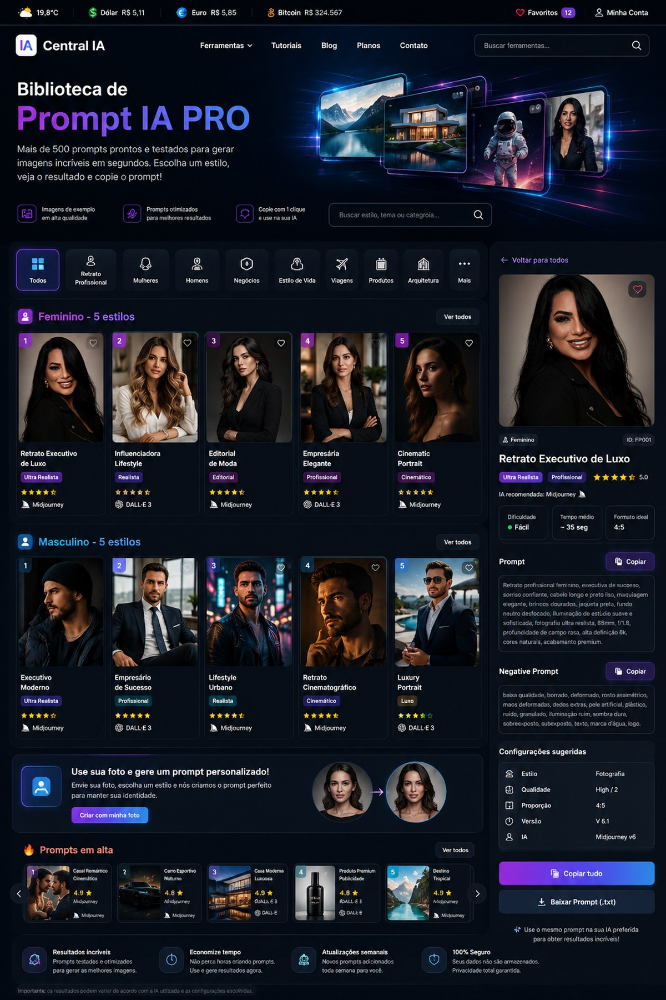

Veja a imagem. Escolha o estilo. Copie o prompt.
Uma galeria pronta para quem quer criar fotos profissionais com inteligência artificial. Explore uma galeria visual com imagens de exemplo exclusivas, prompts completos e modelos prontos para usar com sua própria foto.

Encontre a imagem perfeita para inspirar seu próximo prompt
Navegue como em uma galeria de inspiração: veja o resultado, salve seus favoritos, copie o prompt e use o estilo com sua foto.
Crie o prompt usando sua foto
Envie uma foto, escolha um dos 30 modelos e gere uma versão personalizada do prompt para preservar seu rosto e sua identidade.
JPG, PNG ou WebP, até 10 MB.
Sua foto é exibida apenas no navegador. Para gerar a imagem final, anexe a mesma foto junto com o prompt na ferramenta de IA escolhida.
Perguntas frequentes
Como usar os prompts com minha foto?
Copie o prompt, abra uma IA que aceite imagem de referência, anexe sua foto e cole o comando. A mesma foto deve acompanhar o prompt para preservar seus traços.
O resultado ficará idêntico à imagem de exemplo?
Não necessariamente. A imagem mostra a direção estética. O resultado varia conforme a IA, a foto enviada e as configurações utilizadas.
Posso alterar roupa, fundo e iluminação?
Sim. Use o campo de personalização para informar roupa, ambiente, cabelo, maquiagem, pose e iluminação.
Minha foto é enviada para a Central IA?
Não. A prévia acontece localmente no navegador. Você decide em qual gerador de imagens utilizará a foto.